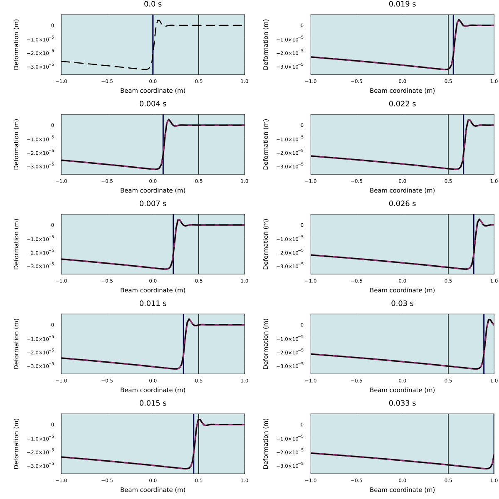

Josiah Murray
Infinite beams, undetermined coefficients, and the Laplace transform
Supervisors:
Dr Ravi Pethiyagoda, Professor Mike Meylan,
Professor Natalie Thamwattana


Laplace domain solution:
1. Split domain
2. Apply Laplace transform
\[EI\partial_x^4 y + m\partial_t^2 y + C(x) \partial_t y + k(x)y = \delta(x-vt)\] $\downarrow$ \[\begin{split}EI\partial_x^4 \bar{y} &+ \left[ms^2 + Cs + k\right] \bar{y} =\\ & \big[ ms+C(x) \big] y(x,0)\\ &+ m\partial_t y(x,0)\\ &+ \frac{P}{v}e^{-s(x-x_p)/v}H(x-x_p)\end{split}\]
3. Solve ODE in $x$
Apply ansatz $e^{r(s)x}$ giving characteristic polynomial \[EIr^4 + (ms^2 + Cs + k) = 0,\] and search for particular solutions of the form $Ae^{B x}$
4. Solve for unknown coefficients
Enforce continuity of function and derivatives in $x$. This results in a linear system for the unknown coefficients in each region.
\[\begin{split}\bar y_j(x,s) = &\sum_{q=1}^4 b_{q,j}(s) e^{r_{q,j}(s)x} + \frac{P e^{-s(x-x_p)/v}H(x-x_p)}{v\left( EI{(s/v)}^4 + ms^2 +C_j s + k_j \right)}\\ + &\begin{cases} \frac{\mu_1(ms+C_j-vm\omega_1)}{EI\omega_1^4+ms^2+C_js+k_j}e^{\omega_1(x-x_p)} + \frac{\mu_2(ms+C_j-vm\omega_2)}{EI\omega_2^4+ms^2+C_js+k_j}e^{\omega_2(x-x_p)}, & x-x_p<0,\\ \frac{\mu_3(ms+C_j-vm\omega_3)}{EI\omega_3^4+ms^2+C_js+k_j}e^{\omega_3(x-x_p)} + \frac{\mu_4(ms+C_j-vm\omega_4)}{EI\omega_4^4+ms^2+C_js+k_j}e^{\omega_4(x-x_p)},& x-x_p>0, \end{cases}\\ \end{split}\]
Time-domain solution:
\[\begin{split}\bar y_j(x,s) = &\sum_{q=1}^4 b_{q,j}(s) e^{r_{q,j}(s)x} + \frac{P e^{-s(x-x_p)/v}H(x-x_p)}{v\left( EI{(s/v)}^4 + ms^2 +C_j s + k_j \right)}\\ + &\begin{cases} \frac{\mu_1(ms+C_j-vm\omega_1)}{EI\omega_1^4+ms^2+C_js+k_j}e^{\omega_1(x-x_p)} + \frac{\mu_2(ms+C_j-vm\omega_2)}{EI\omega_2^4+ms^2+C_js+k_j}e^{\omega_2(x-x_p)}, & x-x_p<0,\\ \frac{\mu_3(ms+C_j-vm\omega_3)}{EI\omega_3^4+ms^2+C_js+k_j}e^{\omega_3(x-x_p)} + \frac{\mu_4(ms+C_j-vm\omega_4)}{EI\omega_4^4+ms^2+C_js+k_j}e^{\omega_4(x-x_p)},& x-x_p>0, \end{cases}\\ \end{split}\]
An analytical solution is not achievable (especially for arbitrarily many transition zones), so we use a numerical technique. Examples include:
Bromwich Contour
Direct Quadrature
Talbot method
Fourier series
Expansions
Weeks' method
Schappery's method
Papoulis' method
Post-Widder
Gaver's method
Gaver-Stehfest
GWR
DQ
Pros:
- Easily implemented.
- Intuitive parameters (e.g. discretisation width).
Cons:
- Computationally expensive.
- Gibbs phenomenon at $t=0$.
Weeks
Pros:
- Low cost for large number of sampled times.
- Accurate inversion at $t=0$.
Cons:
- Expensive for fewer times.
- Important but unintuitive parameters.
GWR
Pros:
- Only one, intuitive parameter.
- Good convergence.
Cons:
- Requires arbitrary precision computing.
- Cannot invert at $t=0$.
Weeks' method works well for low speeds:

$v=1\,\text{m/s}$ ✔

$v=1\,\text{m/s}$ ✔

$v=30\,\text{m/s}$ ✘
Beam deformation
Travelling wave solution
GWR gives gives much better convergence vs. computation time:
DQ

Weeks

GWR

Comparison of relative L2 errors in $x$ over time, when recovering the travelling wave solution for $v=30\,\text{m/s}$.
Travelling wave successfully recovered for $v=30\,\text{m/s}$ using GWR:
Main points:
- To solve piecewise-constant beam equation: split solution domain $\to$ Laplace transform $\to$ undetermined coefficients
- Direct quadrature method is robust and accessible.
- Weeks' method is great for small velocities and generating animations.
- GWR gives the best convergence, especially at larger velocities.
This research was supported by the Australian Government through the ARC's Discovery Projects funding scheme (project DP22010286). The views expressed herein are those of the authors and are not necessarily those of the Australian Government or the ARC.